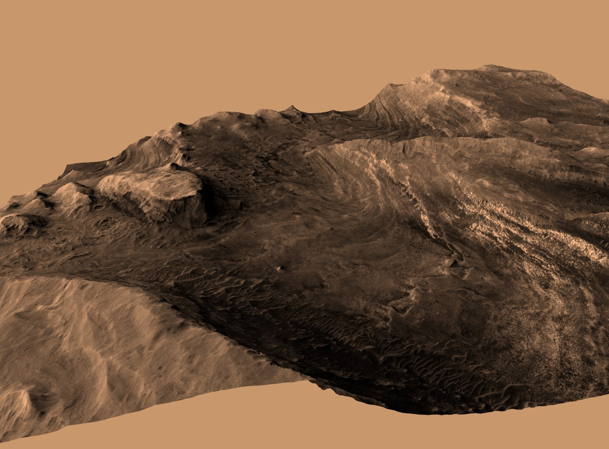
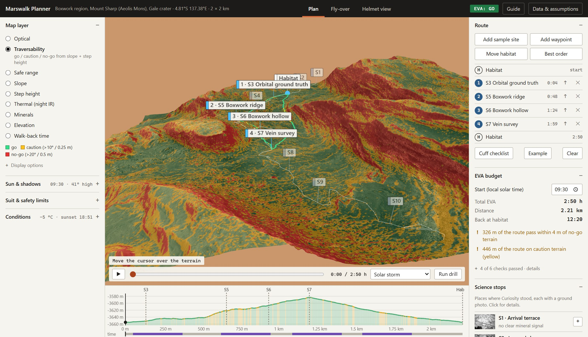
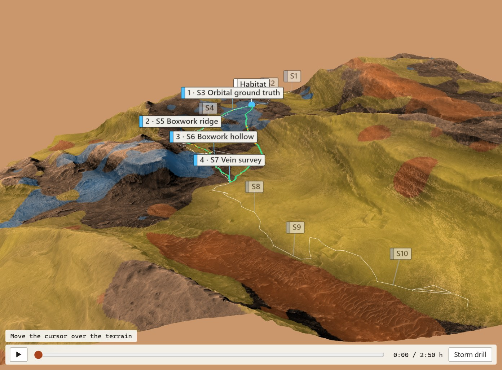
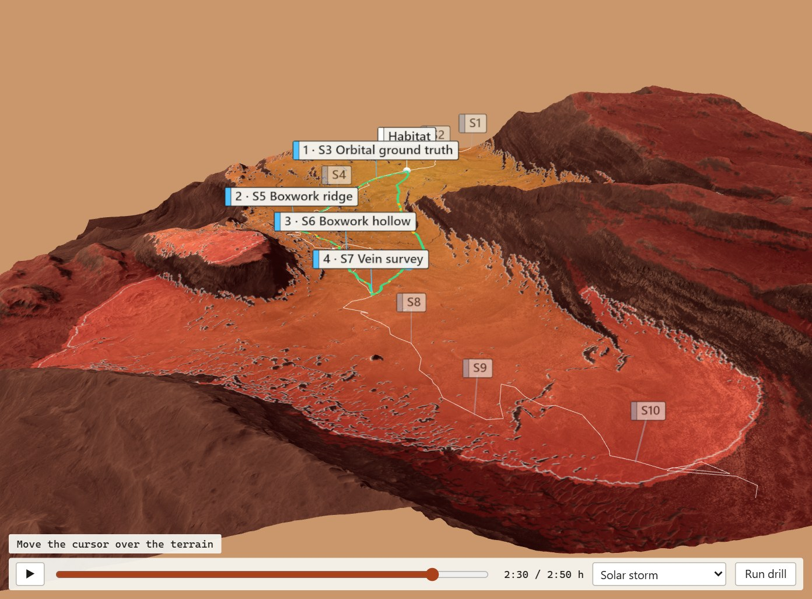
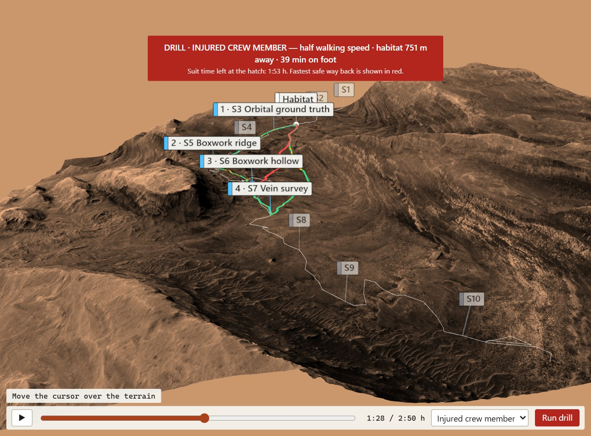
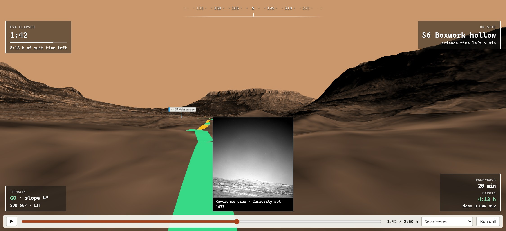
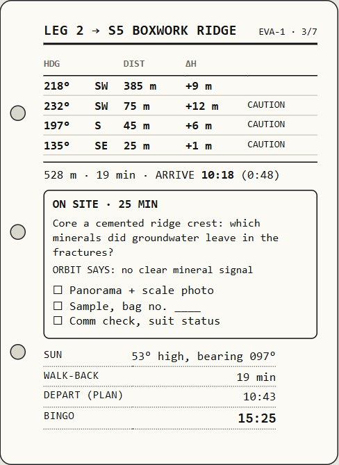

Plan the walk before you open the hatch.
Team SPACE_R · Roman Juhls
Challenge: Interplanetary Survival Guide – Martian Map
A suit lasts a fixed number of hours. The only safe place is the habitat. Every step away from it has to be walked back.
Suit time and slope limit are our planning assumptions; both can be changed in the app.

| MRO HiRISE image | what the ground looks like, 0.25 m per pixel |
| MRO HiRISE elevation | slopes, steps, safe routes, shadows |
| Odyssey THEMIS | night temperature: rock or loose sand |
| MRO CRISM | minerals seen from orbit – where to sample |
| Curiosity track + Navcam | a real ground photo at every stop |
| Curiosity REMS | weather, season, sunrise and sunset |
| Curiosity RAD | radiation dose of the walk |



GO only if the walk home is covered from every point of the route with the reserve untouched. The drills are simulations with stated assumptions.


The checklist follows the cuff checklists Apollo crews wore on the Moon.
Try it: bronkaaa.github.io/marswalk-planner
Code: github.com/Bronkaaa/marswalk-planner
All maps, images and measurements are NASA data. App code and these slides were prepared with an AI assistant (Claude, Anthropic).